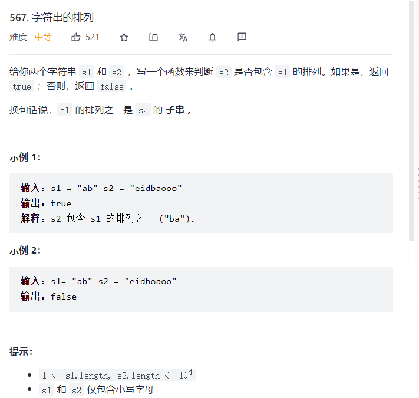

<script>
    var s1 = "ab", s2 = "aobobaoo"

    /**
 * @param {string} s1
 * @param {string} s2
 * @return {boolean}
 */
    var checkInclusion = function (s1, s2) {
        let m1 = new Map();
        let m2 = new Map();
        for (let i = 0; i < s1.length; i++) {
            const s = s1[i];
            m2.set(s, m2.get(s) ? (m2.get(s)+ 1) : 1);
        }

        let left =0;
        let right =0;
        let vaild = 0;
        let len = s2.length;

        while (right < len) {
            let s = s2[right];
            right++; // 滑动右窗口

            // 匹配到s1中的某个字符
            if (m2.has(s)) {
                m1.set(s, m1.get(s) ? (m1.get(s) + 1) : 1);
                // 公共字符 有效字符加一
                if (m1.get(s) === m2.get(s)) {
                    vaild++
                }
            }
            
            // 什么时候开始收缩左边窗口？
            // 划过的指针长度差等于 s1的长度

            while (right - left  === s1.length) {
                if (vaild === m2.size) {
                    return true
                }
                let s = s2[left];
                left++;
                if (m2.has(s)) {
                    if (m1.get(s) === m2.get(s)) {
                      vaild--
                    }
                    m1.set(s, m1.get(s)-1);
                }
            }
        }
        return false;
    };

    
    console.log(checkInclusion(s1, s2));
</script>